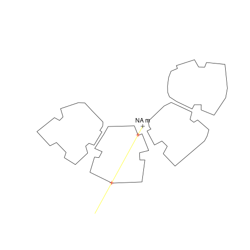
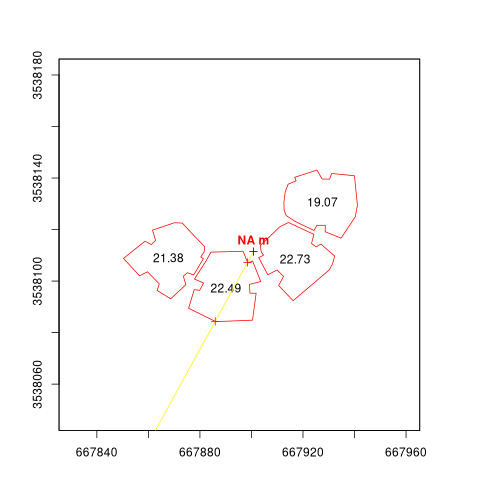

Introduction
shadow is an R package for geometric shadow calculations in an urban environment. A detailed description can be found in the R Journal paper (2019):

Installation
CRAN version:
install.packages("shadow")GitHub version:
install.packages("remotes")
remotes::install_github("michaeldorman/shadow")Documentation
The complete documentation can be found at https://michaeldorman.github.io/shadow/.
Quick demo
library(shadow)
#> Loading required package: sp
library(raster)
# Point
location = as(sf::st_centroid(sf::st_union(sf::st_as_sf(build))), "Spatial") #rgeos::gCentroid(build)
# Time
time = as.POSIXct(
"2004-12-24 13:30:00",
tz = "Asia/Jerusalem"
)
# Location in geographical coordinates
proj4string(location) = CRS("EPSG:32636")
location_geo = sp::spTransform(
location,
CRS("EPSG:4326")
)
crs(location) = NA
# Solar position
solar_pos = suntools::solarpos( #maptools::solarpos(
crds = location_geo,
dateTime = time
)
solar_pos
#> [,1] [,2]
#> [1,] 208.7333 28.79944
# Shadow height at a single point
h = shadowHeight(
location = location,
obstacles = build,
obstacles_height_field = "BLDG_HT",
solar_pos = solar_pos
) # broken
# Result
h
#> [,1]
#> [1,] NA
# Visualization
sun = shadow:::.sunLocation(
location = location,
sun_az = solar_pos[1, 1],
sun_elev = solar_pos[1, 2]
)
sun_ray = ray(from = location, to = sun)
build_outline = as(build, "SpatialLinesDataFrame")
inter = as(sf::st_intersection(sf::st_union(sf::st_as_sf(build_outline)), sf::st_as_sf(sun_ray)), "Spatial")# rgeos::gIntersection(build_outline, sun_ray)
plot(build)
plot(sun_ray, add = TRUE, col = "yellow")
plot(location, add = TRUE)
text(location, paste(round(h, 2), "m"), pos = 3)
plot(inter, add = TRUE, col = "red")
plot of chunk demo1
# Raster template
ext = as(extent(build)+50, "SpatialPolygons")
r = raster(ext, res = 2)
# Shadow height surface
height_surface = shadowHeight(
location = r,
obstacles = build,
obstacles_height_field = "BLDG_HT",
solar_pos = solar_pos,
parallel = 2
) # broken
# Visualization
plot(height_surface, col = grey(seq(0.9, 0.2, -0.01)))
# height_surface NAs contour(height_surface, add = TRUE)
plot(build, add = TRUE, border = "red")
text(as(sf::st_centroid(sf::st_as_sf(build)), "Spatial"), build$BLDG_HT)#text(rgeos::gCentroid(build, byid = TRUE), build$BLDG_HT)
#> Warning: st_centroid assumes attributes are constant over geometries
text(location, paste(round(h, 2), "m"), pos = 3, col = "red", font = 2)
plot(sun_ray, add = TRUE, col = "yellow")
plot(inter, add = TRUE, col = "red")
plot(location, add = TRUE)
plot of chunk demo1